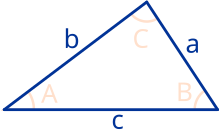
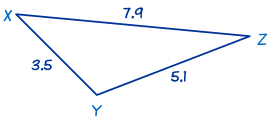
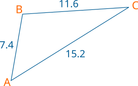

Solving SSS Triangles
"SSS" means "Side, Side, Side"
 |
"SSS" is when we know three sides of the triangle, and want to find the missing angles. |
To solve an SSS triangle:
- use The Law of Cosines first to calculate one of the angles
- then use The Law of Cosines again to find another angle
- and finally use angles of a triangle add to 180° to find the last angle
We use the "angle" version of the Law of Cosines:
cos(C) = a2 + b2 − c22ab
cos(A) = b2 + c2 − a22bc
cos(B) = c2 + a2 − b22ca
(they are all the same formula, just different labels)
Example 1

In this triangle we know the three sides:
- a = 8,
- b = 6 and
- c = 7
Use the Law of Cosines first to find one of the angles. It doesn't matter which one. Let's find angle A first:
Next we find another angle. We use the Law of Cosines again, this time for angle B:
Finally, we can find angle C by using "angles of a triangle add to 180°":
Now we have completely solved the triangle ... we have found all its angles.
The triangle can have letters other than ABC:
Example 2

This is also an SSS triangle.
In this triangle we know the three sides x = 5.1, y = 7.9 and z = 3.5. Use The Law of Cosines to find angle X first:
Next we'll use The Law of Cosines again to find angle Y:
Finally, we can find angle Z by using "angles of a triangle add to 180°":
Another Method
Here's another (slightly faster) way to solve an SSS triangle:
- use the Law of Cosines first to calculate the largest angle
- then use the Law of Sines to find another angle
- and finally use angles of a triangle add to 180° to find the last angle
Largest Angle?
Why do we try to find the largest angle first? That way the other two angles must be acute (less than 90°) and the Law of Sines will give correct answers.
The Law of Sines is difficult to use with angles above 90°. There can be two answers either side of 90° (example: 95° and 85°), but a calculator will only give you the smaller one.
So by calculating the largest angle first using the Law of Cosines, the other angles are less than 90° and the Law of Sines can be used on either of them without difficulty.
Example 3

B is the largest angle, so find B first using the Law of Cosines:
Use the Law of Sines, sinC/c = sinB/b, to find angle A:
Find angle A using "angles of a triangle add to 180":
So A = 47.7°, B = 104.1°, and C = 28.2°
All done! And just a little easier.